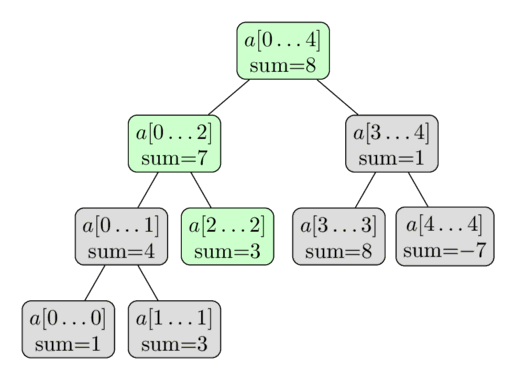

درخت بازه ها (Segment Tree)¶
«درخت بازه ها» یا همون Segment Tree، یه ساختمان دادهی باحاله که اطلاعات مربوط به بازههای مختلفِ یه آرایه رو به شکل درختی ذخیره میکنه. با این ساختار داده میتونی خیلی بهینه به کوئریهای بازهای (Range Queries) روی یه آرایه جواب بدی و در عین حال، اونقدر انعطافپذیره که بهت اجازه میده خودِ آرایه رو هم سریع تغییر بدی.
مثلاً میتونی جمع عناصر یه بازهی پشت سر هم مثل $a[l \dots r]$ یا کمترین عنصر توی همچین بازهای رو توی زمان $O(\log n)$ پیدا کنی.
تازه بین جواب دادن به این کوئریها، درخت بازه ها بهت اجازه میده که آرایه رو هم دستکاری کنی. مثلاً یه عنصر رو عوض کنی یا حتی کل عناصر یه زیربازه رو تغییر بدی (مثلاً به همهی عناصر $a[l \dots r]$ یه مقدار جدید بدی یا یه عددی رو به همشون اضافه کنی).
خلاصه که درخت بازه ها یه ساختمان دادهی خیلی انعطافپذیره و کلی مسئلهی مختلف رو میشه باهاش حل کرد.
تازه، میشه کارهای پیچیدهتر و کوئریهای خفنتری هم روش پیاده کرد (یه نگاهی به بخش نسخههای پیشرفته درخت بازه ها بنداز).
مخصوصاً اینکه درخت بازه ها رو خیلی راحت میشه به ابعاد بالاتر هم تعمیم داد.
مثلاً با یه درخت بازه های دوبعدی میتونی به کوئریهای جمع یا کمینه روی یه زیرمستطیل از یه ماتریس توی زمان $O(\log^2 n)$ جواب بدی.
یکی از ویژگیهای مهم درخت بازه ها اینه که فقط به حافظهی خطی (Linear Memory) نیاز داره.
یه درخت بازه ای استاندارد برای کار کردن روی یه آرایه به اندازهی $n$، به $4n$ تا رأس احتیاج داره.
سادهترین شکل یه درخت بازه ها¶
بیا برای شروع، سادهترین مدل یه درخت بازه ها رو با هم ببینیم.
فرض کن میخوایم به کوئریهای جمع (Sum Queries) به شکل بهینه جواب بدیم.
وظیفهی ما به طور رسمی اینه:
یه آرایهی $a[0 \dots n-1]$ داریم. درخت بازه ها باید بتونه جمع عناصر بین اندیسهای $l$ و $r$ رو حساب کنه (یعنی $\sum_{i=l}^r a[i]$) و همزمان بتونه مقدار عناصر آرایه رو هم تغییر بده (یعنی یه چیزی مثل $a[i] = x$).
نکتهی مهم اینه که درخت بازه ها باید بتونه هر دو تا کار رو توی زمان $O(\log n)$ انجام بده.
این خودش یه پیشرفت بزرگ نسبت به راهحلهای سادهتره.
اگه فقط از یه آرایهی معمولی استفاده کنی، آپدیت کردن عناصر توی $O(1)$ انجام میشه، ولی برای حساب کردن هر جمعی به زمان $O(n)$ نیاز داری.
از طرف دیگه، اگه از مجموعهای پیشوندی (Prefix Sums) استفاده کنی، میتونی جمعها رو توی $O(1)$ حساب کنی، ولی اگه بخوای یه عنصر رو آپدیت کنی، باید $O(n)$ تا از مجموعهای پیشوندی رو تغییر بدی.
ساختار درخت بازه ها¶
میتونیم از روش «تقسیم و غلبه» (Divide and Conquer) برای بازههای آرایه استفاده کنیم.
اول میایم جمع کل عناصر آرایه، یعنی بازهی $a[0 \dots n-1]$ رو حساب میکنیم و یه جا ذخیرهش میکنیم.
بعد آرایه رو به دو تا نصفه تقسیم میکنیم: $a[0 \dots n/2-1]$ و $a[n/2 \dots n-1]$ و جمع هر کدوم از این نصفهها رو هم حساب و ذخیره میکنیم.
این کار رو برای هر کدوم از این نصفهها هم تکرار میکنیم و اینقدر ادامه میدیم تا همهی بازهها به اندازهی ۱ برسن.
میتونیم این بازهها رو مثل یه درخت دودویی (Binary Tree) در نظر بگیریم:
ریشهی این درخت، بازهی $a[0 \dots n-1]$ئه و هر گره (به جز برگها) دقیقاً دو تا بچه داره.
برای همین هم بهش میگن «درخت بازه ها»، هرچند که توی بیشتر پیادهسازیها، این درخت رو به صورت صریح نمیسازیم (یه نگاهی به بخش پیادهسازی بنداز).
اینجا یه عکس از این درخت بازه ها روی آرایهی $a = [1, 3, -2, 8, -7]$ رو میبینی:

از همین توضیحات کوتاه میشه فهمید که یه درخت بازه ها فقط به تعداد خطی گره نیاز داره.
سطح اول درخت یه گره (ریشه) داره، سطح دوم دو تا، سطح سوم چهار تا، و همینطوری ادامه پیدا میکنه تا تعداد گرهها به $n$ برسه.
پس تعداد کل گرهها رو توی بدترین حالت میشه با $1 + 2 + 4 + \dots + 2^{\lceil\log_2 n\rceil} \lt 2^{\lceil\log_2 n\rceil + 1} \lt 4n$ تخمین زد.
یه نکتهی جالب اینه که هر وقت $n$ توانی از دو نباشه، همهی سطحهای درخت کامل پر نمیشن.
این رو میتونی توی عکس هم ببینی.
فعلاً میتونیم این قضیه رو نادیده بگیریم، ولی بعداً موقع پیادهسازی برامون مهم میشه.
ارتفاع درخت بازه ها $O(\log n)$ئه، چون وقتی از ریشه به سمت برگها میایم پایین، اندازهی بازهها تقریباً نصف میشه.
ساختن درخت¶
قبل از اینکه درخت رو بسازیم، باید دو تا تصمیم بگیریم:
- چه مقداری رو توی هر گره درخت بازه ها ذخیره کنیم.
مثلاً توی یه درخت بازه ها برای جمع، هر گره، جمع عناصر بازهی خودش $[l, r]$ رو نگه میداره.
- عملیات ادغام (merge) که دو تا گره خواهر و برادر رو با هم یکی میکنه.
مثلاً توی درخت بازه ها برای جمع، دو تا گره که مربوط به بازههای $a[l_1 \dots r_1]$ و $a[l_2 \dots r_2]$ هستن، با جمع کردن مقدارهاشون توی یه گره جدید برای بازهی $a[l_1 \dots r_2]$ ادغام میشن.
یادت باشه که یه گره، «برگ» حساب میشه اگه بازهش فقط یه مقدار از آرایهی اصلی رو پوشش بده. این گرهها توی پایینترین سطح درخت قرار دارن. مقدارشون هم همون عنصر مربوطه یعنی $a[i]$ئه.
خب، حالا برای ساختن درخت، از پایینترین سطح (برگها) شروع میکنیم و مقدارهاشون رو میذاریم. بعد با استفاده از این مقدارها و تابع merge، میتونیم مقدار گرههای سطح بالاتر رو حساب کنیم.
و همینطور این روند رو ادامه میدیم تا به ریشه برسیم.
البته توضیح این عملیات به صورت بازگشتی از بالا به پایین، یعنی از ریشه به سمت برگها، راحتتره. تابع ساخت، اگه روی یه گره غیر برگ صدا زده بشه، این کارها رو میکنه:
-
به صورت بازگشتی، مقدارهای دو تا گره بچهش رو میسازه.
-
مقدارهای حسابشدهی بچههاش رو با هم ادغام میکنه.
ما ساختن رو از ریشه شروع میکنیم و به این ترتیب، کل درخت بازه ها رو میتونیم بسازیم.
پیچیدگی زمانی ساخت این درخت $O(n)$ میشه، البته به شرطی که عملیات ادغام، زمان ثابت داشته باشه (چون عملیات ادغام $n$ بار صدا زده میشه، که دقیقاً برابر با تعداد گرههای داخلی توی درخته).
کوئریهای جمع¶
فعلاً میخوایم به کوئریهای جمع جواب بدیم. به عنوان ورودی، دو تا عدد $l$ و $r$ میگیریم و باید جمع بازهی $a[l \dots r]$ رو توی زمان $O(\log n)$ حساب کنیم.
برای این کار، درخت بازه ها رو پیمایش میکنیم و از جمعهای از پیش حسابشدهی بازهها استفاده میکنیم.
فرض کن الان توی یه گره هستیم که بازهی $a[tl \dots tr]$ رو پوشش میده.
سه تا حالت ممکنه پیش بیاد.
سادهترین حالت اینه که بازهی کوئری $a[l \dots r]$ دقیقاً با بازهی گره فعلی یکی باشه (یعنی $a[l \dots r] = a[tl \dots tr]$). توی این حالت کارمون تمومه و میتونیم همون جمع از پیش حسابشدهای که توی گره ذخیره شده رو برگردونیم.
حالت بعدی اینه که بازهی کوئری کاملاً توی محدودهی بچهی چپ یا بچهی راست قرار بگیره.
یادت باشه که بچهی چپ بازهی $a[tl \dots tm]$ و بچهی راست بازهی $a[tm + 1 \dots tr]$ رو با $tm = (tl + tr) / 2$ پوشش میدن.
توی این حالت، خیلی راحت میریم سراغ اون بچهای که بازهش، بازهی کوئری ما رو پوشش میده و الگوریتم رو از اونجا ادامه میدیم.
و بالاخره حالت آخر، وقتیه که بازهی کوئری با هر دو تا بچه تلاقی داره.
اینجا چارهای نداریم جز اینکه دو تا فراخوانی بازگشتی انجام بدیم، یکی برای هر بچه.
اول میریم سراغ بچهی چپ و یه جواب جزئی برای این گره حساب میکنیم (یعنی جمع مقادیر تلاقی بین بازهی کوئری و بازهی بچهی چپ). بعد میریم سراغ بچهی راست و جواب جزئی اون رو هم حساب میکنیم و در نهایت این دو تا جواب رو با هم جمع میکنیم تا جواب نهایی به دست بیاد.
به عبارت دیگه، چون بچهی چپ بازهی $a[tl \dots tm]$ و بچهی راست بازهی $a[tm+1 \dots tr]$ رو نشون میده، ما کوئری جمع $a[l \dots tm]$ رو با بچهی چپ و کوئری جمع $a[tm+1 \dots r]$ رو با بچهی راست حساب میکنیم.
پس پردازش یه کوئری جمع، یه تابع بازگشتیه که یا خودش رو یه بار برای بچهی چپ یا راست صدا میزنه (بدون اینکه مرزهای کوئری رو عوض کنه)، یا دو بار، یکی برای چپ و یکی برای راست (که کوئری رو به دو تا زیرکوئری تقسیم میکنه).
و بازگشت وقتی تموم میشه که مرزهای بازهی کوئری فعلی با مرزهای بازهی گره فعلی یکی بشن. توی اون حالت، جواب، همون مقدار از پیش حسابشدهی جمع این بازه است که توی درخت ذخیره شده.
به عبارت دیگه، حساب کردن کوئری مثل یه پیمایش توی درخته که توی همهی شاخههای لازم پخش میشه و از جمعهای از پیش حسابشدهی بازهها استفاده میکنه.
معلومه که پیمایش رو از ریشهی درخت بازه ها شروع میکنیم.
این فرآیند رو توی عکس زیر میتونی ببینی.
دوباره از همون آرایهی $a = [1, 3, -2, 8, -7]$ استفاده کردیم و اینجا میخوایم جمع $\sum_{i=2}^4 a[i]$ رو حساب کنیم.
گرههای رنگی، گرههایی هستن که بهشون سر میزنیم و از مقدارهای از پیش حسابشدهی گرههای سبز استفاده میکنیم.
این کار در نهایت به ما جواب $ -2 + 1 = -1$ رو میده.

چرا پیچیدگی این الگوریتم $O(\log n)$ئه؟
برای اینکه این رو نشون بدیم، بیا به هر سطح از درخت نگاه کنیم.
معلوم میشه که برای هر سطح، ما بیشتر از چهار تا گره رو نمیبینیم.
و چون ارتفاع درخت $O(\log n)$ئه، به همون زمان اجرای دلخواهمون میرسیم.
میتونیم با استقرا نشون بدیم که این گزاره (حداکثر چهار گره در هر سطح) درسته.
توی سطح اول، فقط به یه گره، یعنی ریشه، سر میزنیم، پس اینجا کمتر از چهار تا گره رو دیدیم.
حالا بیا یه سطح دلخواه رو در نظر بگیریم.
طبق فرض استقرا، حداکثر چهار تا گره رو توی این سطح میبینیم.
اگه حداکثر دو تا گره رو ببینیم، سطح بعدی حداکثر چهار تا گره خواهد داشت. این که واضحه، چون هر گره حداکثر میتونه دو تا فراخوانی بازگشتی ایجاد کنه.
پس فرض کنیم که سه یا چهار تا گره رو توی سطح فعلی میبینیم.
از بین این گرهها، بیا اون وسطیها رو با دقت بیشتری بررسی کنیم.
چون کوئری جمع، جمع یه زیرآرایهی پیوسته رو میخواد، میدونیم که بازههای مربوط به گرههای وسطی، به طور کامل توسط بازهی کوئری پوشش داده میشن.
پس این گرهها هیچ فراخوانی بازگشتیای انجام نمیدن.
در نتیجه، فقط گرههای چپترین و راستترین پتانسیل این رو دارن که فراخوانی بازگشتی انجام بدن.
و اونا هم حداکثر چهار تا فراخوانی بازگشتی ایجاد میکنن، پس سطح بعدی هم این گزاره رو برآورده میکنه.
میتونیم بگیم یه شاخه به مرز چپ کوئری نزدیک میشه و شاخهی دوم به مرز راستش.
بنابراین در کل حداکثر $4 \log n$ گره رو میبینیم و این همون زمان اجرای $O(\log n)$ئه.
در نتیجه، کوئری با تقسیم کردن بازهی ورودی به چندتا زیربازه کار میکنه که جمعهاشون قبلاً توی درخت حساب و ذخیره شده.
و اگه هر وقت بازهی کوئری با بازهی گره یکی شد، تقسیمبندی رو متوقف کنیم، فقط به $O(\log n)$ تا از این بازهها نیاز خواهیم داشت و این همون چیزیه که کارایی درخت بازه ها رو نشون میده.
کوئریهای آپدیت¶
حالا فرض کن میخوایم یه عنصر خاص توی آرایه رو تغییر بدیم، مثلاً میخوایم $a[i] = x$ رو انجام بدیم.
و باید درخت بازه ها رو جوری بازسازی کنیم که با آرایهی جدید و اصلاحشده جور دربیاد.
این کوئری از کوئری جمع سادهتره.
هر سطح از یه درخت بازه ها، یه افراز (Partition) از آرایه رو تشکیل میده.
بنابراین یه عنصر $a[i]$ فقط توی یه بازه از هر سطح نقش داره.
در نتیجه، فقط $O(\log n)$ تا گره نیاز به آپدیت دارن.
خیلی راحت میشه دید که درخواست آپدیت رو میشه با یه تابع بازگشتی پیاده کرد.
این تابع، گره فعلی درخت رو به عنوان پارامتر میگیره و به صورت بازگشتی خودش رو روی یکی از دو تا بچهش (اونی که $a[i]$ توی بازهش قرار داره) صدا میزنه و بعد از اون، مقدار جمع خودش رو دوباره حساب میکنه، دقیقاً مثل کاری که توی تابع ساخت انجام میدادیم (یعنی به عنوان جمع دو تا بچهش).
باز هم اینجا یه تصویرسازی با همون آرایه داریم.
اینجا داریم آپدیت $a[2] = 3$ رو انجام میدیم.
گرههای سبز، گرههایی هستن که بهشون سر میزنیم و آپدیتشون میکنیم.

پیادهسازی¶
حالا نکتهی اصلی اینه که چطوری خودِ درخت بازه ها رو ذخیره کنیم.
البته که میتونیم یه ساختار Vertex تعریف کنیم و آبجکتهایی بسازیم که مرزهای بازه، جمعش، و اشارهگر به بچههاش رو ذخیره کنن.
ولی این کار نیاز به ذخیرهی کلی اطلاعات اضافه به شکل اشارهگر داره.
ما از یه ترفند ساده استفاده میکنیم تا این کار رو با یه ساختار دادهی ضمنی (Implicit Data Structure) کارآمدتر کنیم: فقط جمعها رو توی یه آرایه ذخیره میکنیم.
(یه روش مشابه برای هیپهای دودویی یا Binary Heaps استفاده میشه).
جمع ریشه رو توی اندیس ۱، جمع دو تا بچهش رو توی اندیسهای ۲ و ۳، جمع بچههای اونا رو توی اندیسهای ۴ تا ۷ و همینطور الی آخر ذخیره میکنیم.
با اندیسگذاری از ۱، خیلی راحت میشه بچهی چپِ یه گره توی اندیس $i$ رو توی اندیس $2i$ و بچهی راستش رو توی اندیس $2i + 1$ پیدا کرد.
به همین ترتیب، پدرِ یه گره توی اندیس $i$ هم توی $i/2$ (تقسیم صحیح) ذخیره میشه.
این کار پیادهسازی رو خیلی ساده میکنه.
دیگه نیازی نیست ساختار درخت رو توی حافظه نگه داریم.
این ساختار به صورت ضمنی تعریف شده.
ما فقط به یه آرایه احتیاج داریم که شامل جمع همهی بازهها باشه.
همونطور که قبلاً گفتیم، حداکثر باید $4n$ تا گره ذخیره کنیم.
ممکنه کمتر باشه، ولی برای راحتی کار، همیشه یه آرایه به اندازهی $4n$ میگیریم.
بعضی از خونههای آرایهی جمع ممکنه با هیچ گرهای توی درخت واقعی مطابقت نداشته باشن، ولی این موضوع پیادهسازی رو پیچیده نمیکنه.
پس، ما درخت بازه ها رو خیلی ساده به عنوان یه آرایهی $t[]$ با اندازهی چهار برابر اندازهی ورودی $n$ ذخیره میکنیم:
int n, t[4*MAXN];
تابع ساخت درخت بازه ها از یه آرایهی دادهشدهی $a[]$ به این صورته:
این یه تابع بازگشتیه با پارامترهای $a[]$ (آرایهی ورودی)، $v$ (اندیس گره فعلی) و مرزهای $tl$ و $tr$ بازهی فعلی.
توی برنامهی اصلی، این تابع با پارامترهای ریشه صدا زده میشه: $v = 1$، $tl = 0$ و $tr = n - 1$.
void build(int a[], int v, int tl, int tr) {
if (tl == tr) {
t[v] = a[tl];
} else {
int tm = (tl + tr) / 2;
build(a, v*2, tl, tm);
build(a, v*2+1, tm+1, tr);
t[v] = t[v*2] + t[v*2+1];
}
}
علاوه بر این، تابع جواب دادن به کوئریهای جمع هم یه تابع بازگشتیه که به عنوان پارامتر، اطلاعات مربوط به گره/بازهی فعلی (یعنی اندیس $v$ و مرزهای $tl$ و $tr$) و همچنین اطلاعات مربوط به مرزهای کوئری، یعنی $l$ و $r$ رو میگیره.
برای سادهتر شدن کد، این تابع همیشه دو تا فراخوانی بازگشتی انجام میده، حتی اگه فقط یکی لازم باشه. توی اون حالت، فراخوانی بازگشتی اضافه $l > r$ خواهد داشت، و این رو میشه خیلی راحت با یه شرط اضافی اول تابع تشخیص داد.
int sum(int v, int tl, int tr, int l, int r) {
if (l > r)
return 0;
if (l == tl && r == tr) {
return t[v];
}
int tm = (tl + tr) / 2;
return sum(v*2, tl, tm, l, min(r, tm))
+ sum(v*2+1, tm+1, tr, max(l, tm+1), r);
}
و در نهایت کوئری آپدیت. این تابع هم اطلاعات مربوط به گره/بازهی فعلی و علاوه بر اون، پارامترهای کوئری آپدیت (یعنی موقعیت عنصر و مقدار جدیدش) رو میگیره.
void update(int v, int tl, int tr, int pos, int new_val) {
if (tl == tr) {
t[v] = new_val;
} else {
int tm = (tl + tr) / 2;
if (pos <= tm)
update(v*2, tl, tm, pos, new_val);
else
update(v*2+1, tm+1, tr, pos, new_val);
t[v] = t[v*2] + t[v*2+1];
}
}
پیادهسازی با حافظه بهینه¶
بیشتر بچهها از پیادهسازی بخش قبل استفاده میکنن. اگه به آرایهی t نگاه کنی، میبینی که شمارهگذاری گرههای درخت رو به ترتیب پیمایش BFS (سطح به سطح) دنبال میکنه.
با این پیمایش، بچههای گرهی $v$ به ترتیب $2v$ و $2v + 1$ هستن.
اما اگه $n$ توانی از دو نباشه، این روش بعضی از اندیسها رو نادیده میگیره و بخشهایی از آرایهی t بدون استفاده باقی میمونن.
مصرف حافظه به $4n$ محدود میشه، در حالی که یه درخت بازه ها از آرایهای با $n$ عنصر فقط به $2n - 1$ گره نیاز داره.
با این حال، میشه این مصرف رو کم کرد.
ما گرههای درخت رو به ترتیب پیمایش تور اویلر (Euler Tour Traversal) یا همون پیمایش پیشترتیب (pre-order) دوباره شمارهگذاری میکنیم و همهی این گرهها رو کنار هم مینویسیم.
بیا به یه گره توی اندیس $v$ نگاه کنیم، و فرض کنیم مسئول بازهی $[l, r]$ئه و $mid = \dfrac{l + r}{2}$.
واضحه که بچهی چپ، اندیس $v + 1$ رو خواهد داشت.
بچهی چپ مسئول بازهی $[l, mid]$ئه، یعنی در مجموع $2 \times (mid - l + 1) - 1$ گره توی زیردرخت بچهی چپ وجود خواهد داشت.
بنابراین میتونیم اندیس بچهی راستِ $v$ رو حساب کنیم. اندیسش $v + 2 \times (mid - l + 1)$ خواهد بود.
با این شمارهگذاری، مصرف حافظه رو به $2n$ کاهش میدیم.
نسخههای پیشرفته درخت بازه ها¶
درخت بازه ها یه ساختار دادهی خیلی انعطافپذیره و میشه اون رو توی جهتهای مختلف تغییر و گسترش داد.
بیا سعی کنیم اونا رو دستهبندی کنیم.
کوئریهای پیچیدهتر¶
تغییر دادن درخت بازه ها برای محاسبهی کوئریهای مختلف (مثلاً پیدا کردن کمینه/بیشینه به جای جمع) میتونه خیلی راحت باشه، ولی گاهی هم میتونه خیلی غیربدیهی و چالشبرانگیز باشه.
پیدا کردن بیشینه (Maximum)¶
بیا شرط مسئلهای که بالا توضیح دادیم رو یه کم تغییر بدیم: به جای کوئری جمع، حالا میخوایم کوئریهای بیشینه رو انجام بدیم.
درخت دقیقاً همون ساختاری رو خواهد داشت که بالا توضیح دادیم.
فقط باید نحوهی محاسبهی $t[v]$ رو توی توابع build و update تغییر بدیم.
$t[v]$ حالا بیشینهی بازهی مربوط به خودش رو ذخیره میکنه.
و همچنین باید محاسبهی مقدار برگشتی تابع sum رو هم تغییر بدیم (جمع رو با بیشینه جایگزین کنیم).
البته این مسئله رو میشه خیلی راحت به محاسبهی کمینه به جای بیشینه هم تغییر داد.
به جای اینکه پیادهسازی این مسئله رو نشون بدیم، پیادهسازی یه نسخهی پیچیدهتر از این مسئله رو توی بخش بعدی ارائه میدیم.
پیدا کردن بیشینه و تعداد دفعات ظهورش¶
در این سوال علاوه بر پیدا کردن بیشینه، باید تعداد دفعاتی که تکرار شده رو هم پیدا کنیم.
برای حل این مسئله، توی هر گره درخت یه جفت عدد (pair) ذخیره میکنیم:
علاوه بر بیشینه، تعداد تکرارش رو هم توی بازهی مربوطه ذخیره میکنیم.
تعیین اینکه چه جفتی رو توی $t[v]$ ذخیره کنیم، هنوز هم میتونه توی زمان ثابت با استفاده از اطلاعات جفتهای ذخیره شده توی گرههای بچه انجام بشه.
ترکیب دو تا از این جفتها باید توی یه تابع جداگانه انجام بشه، چون این عملیاتیه که ما هم موقع ساختن درخت، هم موقع جواب دادن به کوئریهای بیشینه و هم موقع انجام تغییرات، انجامش میدیم.
pair<int, int> t[4*MAXN];
pair<int, int> combine(pair<int, int> a, pair<int, int> b) {
if (a.first > b.first)
return a;
if (b.first > a.first)
return b;
return make_pair(a.first, a.second + b.second);
}
void build(int a[], int v, int tl, int tr) {
if (tl == tr) {
t[v] = make_pair(a[tl], 1);
} else {
int tm = (tl + tr) / 2;
build(a, v*2, tl, tm);
build(a, v*2+1, tm+1, tr);
t[v] = combine(t[v*2], t[v*2+1]);
}
}
pair<int, int> get_max(int v, int tl, int tr, int l, int r) {
if (l > r)
return make_pair(-INF, 0);
if (l == tl && r == tr)
return t[v];
int tm = (tl + tr) / 2;
return combine(get_max(v*2, tl, tm, l, min(r, tm)),
get_max(v*2+1, tm+1, tr, max(l, tm+1), r));
}
void update(int v, int tl, int tr, int pos, int new_val) {
if (tl == tr) {
t[v] = make_pair(new_val, 1);
} else {
int tm = (tl + tr) / 2;
if (pos <= tm)
update(v*2, tl, tm, pos, new_val);
else
update(v*2+1, tm+1, tr, pos, new_val);
t[v] = combine(t[v*2], t[v*2+1]);
}
}
محاسبه بزرگترین مقسومعلیه مشترک (ب.م.م) / کوچکترین مضرب مشترک (ک.م.م)¶
توی این مسئله میخوایم ب.م.م (GCD) / ک.م.م (LCM) همهی اعدادِ بازههای داده شده از آرایه رو حساب کنیم.
این نوع جالب از درخت بازه ها رو میشه دقیقاً به همون روشی که درختای بازه برای کوئریهای جمع / کمینه / بیشینه رو درآوردیم، حل کرد:
کافیه ب.م.م / ک.م.م بازهی مربوطه رو توی هر گرهی درخت ذخیره کنیم.
ترکیب دو تا گره هم میتونه با محاسبهی ب.م.م / ک.م.م هر دو گره انجام بشه.
شمارش تعداد صفرها و جستجو برای $k$-امین صفر¶
تو این مسئله میخوایم تعداد صفرها رو توی یه بازهی مشخص پیدا کنیم و علاوه بر اون، با یه تابع دوم، اندیس $k$-امین صفر رو پیدا کنیم.
بازم باید مقادیری که توی درخت ذخیره میکنیم رو یه کم تغییر بدیم:
این بار تعداد صفرها رو توی هر بازه، توی $t[]$ ذخیره میکنیم.
کاملاً واضحه که چطور باید توابع build، update و count_zero رو پیادهسازی کنیم؛ میتونیم خیلی راحت از ایدههای مسئلهی کوئری جمع استفاده کنیم.
پس بخش اول مسئله رو حل کردیم.
حالا بیا یاد بگیریم چطور مسئلهی پیدا کردن $k$-امین صفر توی آرایهی $a[]$ رو حل کنیم.
برای این کار، از بالای درخت بازه ها میایم پایین، از ریشه شروع میکنیم و هر بار به بچهی چپ یا راست حرکت میکنیم، بستگی به این داره که کدوم بازه شامل $k$-امین صفر باشه.
برای اینکه تصمیم بگیریم سراغ کدوم بچه بریم، کافیه به تعداد صفرهای موجود توی بازهی مربوط به گرهی چپ نگاه کنیم.
اگه این تعدادِ از پیش حسابشده، بزرگتر یا مساوی $k$ باشه، باید بریم سراغ بچهی چپ، وگرنه باید بریم سراغ بچهی راست.
یادت باشه، اگه بچهی راست رو انتخاب کنیم، باید تعداد صفرهای بچهی چپ رو از $k$ کم کنیم.
توی پیادهسازی میتونیم حالت خاصی که $a[]$ کمتر از $k$ تا صفر داره رو با برگردوندن -1 مدیریت کنیم.
int find_kth(int v, int tl, int tr, int k) {
if (k > t[v])
return -1;
if (tl == tr)
return tl;
int tm = (tl + tr) / 2;
if (t[v*2] >= k)
return find_kth(v*2, tl, tm, k);
else
return find_kth(v*2+1, tm+1, tr, k - t[v*2]);
}
جستجوی پیشوندی از آرایه با یک مقدار معین¶
وظیفه اینطوریه:
برای یه مقدار داده شدهی $x$، باید به سرعت کوچکترین اندیس $i$ رو پیدا کنیم به طوری که جمع $i$ عنصر اول آرایهی $a[]$ بزرگتر یا مساوی $x$ باشه (با فرض اینکه آرایهی $a[]$ فقط مقادیر غیرمنفی داره).
این کار رو میشه با استفاده از جستجوی دودویی (Binary Search) و محاسبهی مجموع پیشوندها با درخت بازه ها حل کرد.
ولی این کار یه راه حل $O(\log^2 n)$ به ما میده.
به جاش میتونیم از همون ایدهی بخش قبلی استفاده کنیم و موقعیت رو با پایین رفتن توی درخت پیدا کنیم:
هر بار به چپ یا راست حرکت میکنیم، بستگی به جمع بچهی چپ داره.
اینطوری جواب رو توی زمان $O(\log n)$ پیدا میکنیم.
جستجو برای اولین عنصر بزرگتر از یک مقدار معین¶
وظیفه اینطوریه:
برای یه مقدار داده شدهی $x$ و یه بازهی $a[l \dots r]$، کوچکترین $i$ رو توی بازهی $a[l \dots r]$ پیدا کن، طوری که $a[i]$ بزرگتر از $x$ باشه.
این کار رو میشه با استفاده از جستجوی دودویی روی کوئریهای بیشینهی پیشوند با درخت بازه ها حل کرد.
ولی این کار یه راه حل $O(\log^2 n)$ به ما میده.
به جاش، میتونیم از همون ایدهی بخشهای قبلی استفاده کنیم و موقعیت رو با پایین رفتن توی درخت پیدا کنیم:
هر بار به چپ یا راست حرکت میکنیم، بستگی به مقدار بیشینهی بچهی چپ داره.
اینطوری جواب رو توی زمان $O(\log n)$ پیدا میکنیم.
int get_first(int v, int tl, int tr, int l, int r, int x) {
if(tl > r || tr < l) return -1;
if(t[v] <= x) return -1;
if (tl== tr) return tl;
int tm = tl + (tr-tl)/2;
int left = get_first(2*v, tl, tm, l, r, x);
if(left != -1) return left;
return get_first(2*v+1, tm+1, tr, l ,r, x);
}
پیدا کردن زیربازهها با بیشترین مجموع¶
اینجا باز هم برای هر کوئری یه بازهی $a[l \dots r]$ میگیریم، این بار باید یه زیربازه $a[l^\prime \dots r^\prime]$ پیدا کنیم طوری که $l \le l^\prime$ و $r^\prime \le r$ باشه و جمع عناصر این بازه بیشترین مقدار ممکن باشه.
مثل قبل، میخوایم بتونیم عناصر جداگانهی آرایه رو هم تغییر بدیم.
عناصر آرایه میتونن منفی باشن و زیربازهی بهینه میتونه خالی باشه (مثلاً اگه همهی عناصر منفی باشن).
این مسئله یه استفادهی غیربدیهی از درخت بازه هاست.
این بار چهار تا مقدار برای هر گره ذخیره میکنیم:
جمع بازه، بیشترین جمع پیشوندی، بیشترین جمع پسوندی، و جمع زیربازهی بیشینه توی اون بازه.
به عبارت دیگه، برای هر بازه از درخت بازه ها، جواب از قبل حساب شده و همچنین جوابها برای بازههایی که با مرزهای چپ و راست بازه تماس دارن هم حساب شده.
چطور درختی با چنین دادههایی بسازیم؟
بازم این رو به صورت بازگشتی حساب میکنیم:
اول هر چهار تا مقدار رو برای بچههای چپ و راست حساب میکنیم، و بعد اونا رو با هم ترکیب میکنیم تا چهار تا مقدار برای گره فعلی به دست بیاد.
یادت باشه که جواب برای گره فعلی یکی از این موارد زیره:
- جواب بچهی چپ، که یعنی زیربازهی بهینه کاملاً توی بازهی بچهی چپ قرار داره.
- جواب بچهی راست، که یعنی زیربازهی بهینه کاملاً توی بازهی بچهی راست قرار داره.
- جمع بیشترین جمع پسوندی بچهی چپ و بیشترین جمع پیشوندی بچهی راست، که یعنی زیربازهی بهینه با هر دو تا بچه تلاقی داره.
پس جواب برای گره فعلی، بیشینهی این سه تا مقداره.
محاسبهی بیشترین جمع پیشوندی/پسوندی حتی سادهتره.
اینجا پیادهسازی تابع combine رو میبینی، که فقط دادهها رو از بچهی چپ و راست میگیره و دادههای گره فعلی رو برمیگردونه.
struct data {
int sum, pref, suff, ans;
};
data combine(data l, data r) {
data res;
res.sum = l.sum + r.sum;
res.pref = max(l.pref, l.sum + r.pref);
res.suff = max(r.suff, r.sum + l.suff);
res.ans = max(max(l.ans, r.ans), l.suff + r.pref);
return res;
}
با استفاده از تابع combine، ساختن درخت بازه ها آسونه.
میتونیم اون رو دقیقاً به همون روشی که توی پیادهسازیهای قبلی انجام دادیم، پیادهسازی کنیم.
برای مقداردهی اولیهی برگها، یه تابع کمکی make_data هم درست میکنیم که یه شیء data حاوی اطلاعات یه مقدار واحد رو برمیگردونه.
data make_data(int val) {
data res;
res.sum = val;
res.pref = res.suff = res.ans = max(0, val);
return res;
}
void build(int a[], int v, int tl, int tr) {
if (tl == tr) {
t[v] = make_data(a[tl]);
} else {
int tm = (tl + tr) / 2;
build(a, v*2, tl, tm);
build(a, v*2+1, tm+1, tr);
t[v] = combine(t[v*2], t[v*2+1]);
}
}
void update(int v, int tl, int tr, int pos, int new_val) {
if (tl == tr) {
t[v] = make_data(new_val);
} else {
int tm = (tl + tr) / 2;
if (pos <= tm)
update(v*2, tl, tm, pos, new_val);
else
update(v*2+1, tm+1, tr, pos, new_val);
t[v] = combine(t[v*2], t[v*2+1]);
}
}
فقط مونده که چطوری به یه کوئری جواب بدیم.
برای جواب دادن بهش، مثل قبل توی درخت پایین میریم، کوئری رو به چندتا زیربازه که با بازههای درخت بازه ها منطبق هستن، میشکنیم و جوابهای اونها رو با هم ترکیب میکنیم تا جواب نهایی کوئری به دست بیاد.
پس باید واضح باشه که کار دقیقاً مثل درخت بازه های سادهست، اما به جای جمع / کمینهسازی / بیشینهسازی مقادیر، از تابع combine استفاده میکنیم.
data query(int v, int tl, int tr, int l, int r) {
if (l > r)
return make_data(0);
if (l == tl && r == tr)
return t[v];
int tm = (tl + tr) / 2;
return combine(query(v*2, tl, tm, l, min(r, tm)),
query(v*2+1, tm+1, tr, max(l, tm+1), r));
}
ذخیره کردن کل زیرآرایهها توی هر گره¶
این یه بخش جداست که با بقیهی چیزایی که گفتیم فرق داره. اینجا دیگه توی هر گره از درخت بازه ها، اطلاعات مربوط به بازه رو به شکل فشرده (مثلاً فقط جمع، کمینه، بیشینه و ...) ذخیره نمیکنیم، بلکه خودِ کل عنصرهای اون بازه رو نگه میداریم.
بنابراین ریشهی درخت بازه ها کل عنصرهای آرایه رو ذخیره میکنه، بچهی چپش نیمهی اول آرایه رو، بچهی راست نیمهی دوم رو، و همینطور الی آخر.
توی سادهترین کاربرد این تکنیک، ما عناصر رو به صورت مرتب شده ذخیره میکنیم.
توی نسخههای پیچیدهتر، عناصر توی لیست ذخیره نمیشن، بلکه توی ساختارهای دادهی پیشرفتهتر (مثل set، map و ...) ذخیره میشن.
اما همهی این روشها یه عامل مشترک دارن، و اون اینه که هر گره به حافظهی خطی (یعنی متناسب با طول بازهی مربوط بهش) نیاز داره.
اولین سوال طبیعی موقع بررسی این نوع درختهای بازه، در مورد مصرف حافظهست.
شاید به نظر بیاد که این کار حافظهی $O(n^2)$ میخواد، اما معلوم میشه که کل درخت فقط به حافظهی $O(n \log n)$ نیاز خواهد داشت.
چرا اینطوریه؟
خیلی ساده، چون هر عنصر از آرایه توی $O(\log n)$ تا بازه قرار میگیره (یادت باشه ارتفاع درخت $O(\log n)$ئه).
پس با وجود اینکه این مدل درخت بازه ها به نظر اسرافکارانه میاد، فقط یه کم بیشتر از درخت بازه های معمولی حافظه مصرف میکنه.
چندتا کاربرد معمول این ساختار داده رو در ادامه توضیح میدیم.
بد نیست به شباهت این درختهای بازه با ساختارهای دادهی دو بعدی هم اشاره کنیم (در واقع این یه ساختار دادهی دو بعدیایه، ولی با قابلیتهای نسبتاً محدود).
پیدا کردن کوچکترین عدد بزرگتر یا مساوی یه عدد مشخص (بدون کوئری تغییر)¶
میخوایم به کوئریهایی از این فرم جواب بدیم:
برای سه تا عدد داده شده $(l, r, x)$ باید کوچکترین عدد توی بازهی $a[l \dots r]$ رو که بزرگتر یا مساوی $x$ئه، پیدا کنیم.
یه درخت بازه ها میسازیم.
توی هر گره، یه لیست مرتب شده از همهی اعدادی که توی بازهی مربوطه ظاهر میشن رو ذخیره میکنیم، همونطور که بالا توضیح دادیم.
چطور میشه چنین درخت بازه هاای رو بهینهترین شکل ممکن ساخت؟
مثل همیشه به این مسئله به صورت بازگشتی نگاه میکنیم: فرض کن لیستهای بچههای چپ و راست از قبل ساخته شدن و ما میخوایم لیست رو برای گره فعلی بسازیم.
از این دیدگاه، عملیات الان خیلی واضحه و میتونه توی زمان خطی انجام بشه:
فقط باید دو تا لیست مرتب شده رو توی یه لیست ادغام کنیم، که این کار رو میشه با پیمایش اونا با استفاده از دو تا اشارهگر انجام داد.
STL سیپلاسپلاس از قبل یه پیادهسازی از این الگوریتم داره.
به خاطر این ساختار درخت بازه ها و شباهتش به الگوریتم مرتبسازی ادغامی (Merge Sort)، این ساختار داده اغلب "درخت مرتبسازی ادغامی" (Merge Sort Tree) هم نامیده میشه.
vector<int> t[4*MAXN];
void build(int a[], int v, int tl, int tr) {
if (tl == tr) {
t[v] = vector<int>(1, a[tl]);
} else {
int tm = (tl + tr) / 2;
build(a, v*2, tl, tm);
build(a, v*2+1, tm+1, tr);
merge(t[v*2].begin(), t[v*2].end(), t[v*2+1].begin(), t[v*2+1].end(),
back_inserter(t[v]));
}
}
ما از قبل میدونیم که درخت بازه هاای که به این روش ساخته بشه به حافظهی $O(n \log n)$ نیاز خواهد داشت.
و به لطف این پیادهسازی، ساختنش هم $O(n \log n)$ زمان میبره، چون هر لیست در زمان خطی نسبت به اندازهش ساخته میشه.
حالا بیا به جواب دادن کوئری فکر کنیم.
ما مثل درخت بازه های معمولی توی درخت پایین میریم و بازهی خودمون $a[l \dots r]$ رو به چندتا زیربازه میشکنیم (حداکثر به $O(\log n)$ تا تیکه).
واضحه که جواب کل، کمینهی هر کدوم از زیرکوئریهاست.
بنابراین الان فقط باید بفهمیم که چطوری به یه کوئری توی یکی از این زیربازهها که با بعضی از گرههای درخت مطابقت داره، جواب بدیم.
ما توی یکی از گرههای درخت بازه ها هستیم و میخوایم جواب کوئری رو حساب کنیم، یعنی کوچکترین عدد بزرگتر یا مساوی عدد داده شدهی $x$ رو پیدا کنیم.
از اونجایی که گره شامل یه لیست مرتب شده از عناصر هست، میتونیم خیلی راحت یه جستجوی دودویی (Binary Search) توی این لیست انجام بدیم و اولین عدد بزرگتر یا مساوی $x$ رو برگردونیم.
بنابراین جواب به کوئری توی یه بازه از درخت $O(\log n)$ زمان میبره، و کل کوئری توی $O(\log^2 n)$ پردازش میشه.
int query(int v, int tl, int tr, int l, int r, int x) {
if (l > r)
return INF;
if (l == tl && r == tr) {
vector<int>::iterator pos = lower_bound(t[v].begin(), t[v].end(), x);
if (pos != t[v].end())
return *pos;
return INF;
}
int tm = (tl + tr) / 2;
return min(query(v*2, tl, tm, l, min(r, tm), x),
query(v*2+1, tm+1, tr, max(l, tm+1), r, x));
}
ثابت INF برابر با یه عدد خیلی بزرگه که از همهی اعداد آرایه بزرگتره.
استفاده ازش به این معنیه که هیچ عدد بزرگتر یا مساوی $x$ توی بازه وجود نداره.
یعنی "توی این بازه جوابی پیدا نشد".
پیدا کردن کوچکترین عدد بزرگتر یا مساوی یک عدد مشخص (با کوئری تغییر)¶
روش قبلی یه نقطه ضعف داشت، نمیشد بین جواب دادن به کوئریها، آرایه رو تغییر داد.
حالا میخوایم دقیقاً همین کار رو بکنیم: یه کوئری تغییر، انتساب $a[i] = y$ رو انجام خواهد داد.
راه حل شبیه راه حل مسئلهی قبلیه، اما به جای لیستها توی هر گرهی درخت بازه ها، یه لیست متعادل (Balanced List) مثل درخت دودویی جستجوی متوازن ذخیره میکنیم که بهت اجازه میده به سرعت اعداد رو جستجو کنی، اعداد رو حذف کنی و اعداد جدید رو درج کنی.
چون آرایه میتونه یه عدد رو چند بار داشته باشه، بهترین انتخاب ساختار داده، multisetئه.
ساخت چنین درخت بازه هاای تقریباً به همون روشی که توی مسئلهی قبلی انجام شد، انجام میشه، فقط الان باید multisetها رو با هم ترکیب کنیم نه لیستهای مرتب شده.
این کار باعث میشه زمان ساخت $O(n \log^2 n)$ بشه (به طور کلی ادغام دو تا درخت قرمز-سیاه رو میشه توی زمان خطی انجام داد، ولی STL سیپلاسپلاس این پیچیدگی زمانی رو تضمین نمیکنه).
تابع query هم تقریباً معادل قبلیه، فقط الان باید تابع lower_bound از multiset صدا زده بشه (تابع std::lower_bound فقط اگه با تکرارگرهای با دسترسی تصادفی (random access iterators) استفاده بشه توی زمان $O(\log n)$ کار میکنه).
در نهایت، درخواست تغییر.
برای پردازشش، باید توی درخت پایین بریم و همهی multisetهای بازههای مربوطه که عنصر تحت تأثیر رو دارن، تغییر بدیم.
ما خیلی راحت مقدار قدیمی این عنصر رو حذف میکنیم (اما فقط یه دونه ازش) و مقدار جدید رو درج میکنیم.
void update(int v, int tl, int tr, int pos, int new_val) {
t[v].erase(t[v].find(a[pos]));
t[v].insert(new_val);
if (tl != tr) {
int tm = (tl + tr) / 2;
if (pos <= tm)
update(v*2, tl, tm, pos, new_val);
else
update(v*2+1, tm+1, tr, pos, new_val);
} else {
a[pos] = new_val;
}
}
پردازش این درخواست تغییر هم $O(\log^2 n)$ زمان میبره.
پیدا کردن کوچکترین عدد بزرگتر یا مساوی یک عدد مشخص (شتابدهی با "آبشار کسری" (Fractional Cascading))¶
ما همون مسئلهی قبلی رو داریم، میخوایم کوچکترین عدد بزرگتر یا مساوی $x$ رو توی یه بازه پیدا کنیم، اما این بار توی زمان $O(\log n)$.
ما پیچیدگی زمانی رو با استفاده از تکنیک "آبشار کسری" بهبود میدیم.
آبشار کسری یه تکنیک سادهست که بهت اجازه میده زمان اجرای چندین جستجوی دودویی که همزمان انجام میشن رو بهبود بدی.
روش قبلی ما برای کوئری جستجو این بود که کار رو به چندتا زیرمسئله تقسیم میکردیم که هر کدوم با یه جستجوی دودویی حل میشدن.
آبشار کسری بهت اجازه میده همهی این جستجوهای دودویی رو با یه جستجوی واحد جایگزین کنی.
سادهترین و واضحترین مثال از آبشار کسری مسئلهی زیره:
$k$ تا لیست مرتب شده از اعداد داریم و باید توی هر لیست، اولین عدد بزرگتر یا مساوی با عدد داده شده رو پیدا کنیم.
به جای اینکه برای هر لیست یه جستجوی دودویی انجام بدیم، میتونیم همهی لیستها رو توی یه لیست بزرگ مرتب شده ادغام کنیم.
علاوه بر این، برای هر عنصر $y$ یه لیست از نتایج جستجوی $y$ توی هر کدوم از $k$ تا لیست رو ذخیره میکنیم.
بنابراین اگه بخوایم کوچکترین عدد بزرگتر یا مساوی $x$ رو پیدا کنیم، فقط باید یه جستجوی دودویی واحد انجام بدیم و از لیست اندیسها میتونیم کوچکترین عدد رو توی هر لیست تعیین کنیم.
این روش اما به $O(n \cdot k)$ حافظه نیاز داره ($n$ طول لیستهای ترکیبیایه)، که میتونه خیلی ناکارآمد باشه.
آبشار کسری این پیچیدگی حافظه رو با ایجاد $k$ تا لیست جدید از $k$ تا لیست ورودی، به حافظهی $O(n)$ کاهش میده، که توی اون هر لیست، شامل لیست مربوطه و علاوه بر اون هر عنصر دوم از لیست جدید بعدی میشه.
با استفاده از این ساختار، فقط لازمه دو تا اندیس ذخیره بشه، اندیس عنصر توی لیست اصلی و اندیس عنصر توی لیست جدید بعدی.
بنابراین این روش فقط از حافظهی $O(n)$ استفاده میکنه و هنوز هم میتونه به کوئریها با استفاده از یه جستجوی دودویی واحد جواب بده.
اما برای کاربرد ما، به قدرت کامل آبشار کسری نیازی نداریم.
توی درخت بازه های ما، یه گره شامل لیست مرتب شده از همهی عناصریه که توی زیردرختهای چپ یا راستش وجود دارن (مثل درخت مرتبسازی ادغامی).
علاوه بر این لیست مرتب شده، برای هر عنصر دو تا موقعیت ذخیره میکنیم.
برای یه عنصر $y$، کوچکترین اندیس $i$ رو ذخیره میکنیم، طوری که عنصر $i$-ام توی لیست مرتب شدهی بچهی چپ بزرگتر یا مساوی $y$ باشه.
و کوچکترین اندیس $j$ رو ذخیره میکنیم، طوری که عنصر $j$-ام توی لیست مرتب شدهی بچهی راست بزرگتر یا مساوی $y$ باشه.
این مقادیر رو میشه به صورت موازی با مرحلهی ادغام موقع ساختن درخت حساب کرد.
این کار چطوری کوئریها رو سریعتر میکنه؟
یادت باشه، توی راه حل عادی ما توی هر گره یه جستجوی دودویی انجام میدادیم.
اما با این تغییر، میتونیم از همشون به جز یکی خلاص بشیم.
برای جواب دادن به یه کوئری، ما خیلی راحت یه جستجوی دودویی توی گرهی ریشه انجام میدیم.
این به ما کوچکترین عنصر $y \ge x$ رو توی کل آرایه میده، اما دو تا موقعیت هم بهمون میده.
اندیس کوچکترین عنصر بزرگتر یا مساوی $x$ توی زیردرخت چپ، و اندیس کوچکترین عنصر $y$ توی زیردرخت راست. یادت باشه که $\ge y$ همون $\ge x$ئه، چون آرایهی ما هیچ عنصری بین $x$ و $y$ نداره.
توی راه حل عادی درخت مرتبسازی ادغامی، ما این اندیسها رو از طریق جستجوی دودویی حساب میکردیم، اما با کمک مقادیر از پیش حساب شده میتونیم اونا رو توی $O(1)$ پیدا کنیم.
و میتونیم این کار رو تکرار کنیم تا زمانی که همهی گرههایی که بازهی کوئری ما رو پوشش میدن، ببینیم.
خلاصه، مثل معمول موقع یه کوئری به $O(\log n)$ گره سر میزنیم. توی گرهی ریشه یه جستجوی دودویی انجام میدیم، و توی همهی گرههای دیگه فقط کار ثابت انجام میدیم.
این یعنی پیچیدگی جواب دادن به یه کوئری $O(\log n)$ میشه.
اما یادت باشه که این کار سه برابر بیشتر از یه درخت مرتبسازی ادغامی عادی حافظه مصرف میکنه، که خود اون هم از قبل حافظهی زیادی ($O(n \log n)$) مصرف میکنه.
اعمال این تکنیک به مسئلهای که به هیچ کوئری تغییری نیاز نداره، سادهست.
دو تا موقعیت فقط اعداد صحیح هستن و به راحتی با شمردن موقع ادغام دو تا دنبالهی مرتب شده قابل محاسبهان.
هنوز هم میشه اجازه داد که کوئریهای تغییر انجام بشن، اما این کار کل کد رو پیچیده میکنه.
به جای اعداد صحیح، باید آرایهی مرتب شده رو به صورت multiset ذخیره کنی، و به جای اندیسها باید تکرارگرها (iterators) رو ذخیره کنی.
و باید خیلی با دقت کار کنی تا موقع یه کوئری تغییر، تکرارگرهای صحیح رو زیاد یا کم کنی.
سایر تغییرات ممکن¶
این تکنیک یه کلاس کاملاً جدید از کاربردهای ممکن رو نشون میده.
به جای ذخیره کردن یه vector یا یه multiset توی هر گره، میشه از ساختارهای دادهی دیگهای استفاده کرد:
درختهای بازهی دیگه (که تا حدودی توی بخش تعمیم به ابعاد بالاتر بحث شده)، درختهای فنویک (Fenwick Trees)، درختان کارتزین (Cartesian Trees) و غیره.
بهروزرسانیهای بازهای (انتشار با تأخیر یا Lazy Propagation)¶
همهی مسائلی که توی بخشهای قبل دیدیم، کوئریهای تغییری رو بررسی کردن که هر بار فقط یه عنصر از آرایه رو تحت تأثیر قرار میدادن.
اما درخت بازه ها این امکان رو میده که کوئریهای تغییر رو روی یه بازهی کامل از عناصر پشت سر هم اعمال کنیم و کوئری رو توی همون زمان $O(\log n)$ انجام بدیم.
افزودن در بازهها¶
بیا با سادهترین شکل مسائل شروع کنیم: کوئری تغییر باید عدد $x$ رو به همهی اعداد توی بازهی $a[l \dots r]$ اضافه کنه.
کوئری دومی که قراره بهش جواب بدیم، خیلی ساده مقدار $a[i]$ رو میپرسه.
برای اینکه کوئری افزودن رو کارآمد کنیم، توی هر گرهی درخت بازه ها ذخیره میکنیم که چقدر باید به همهی اعداد توی بازهی مربوطهش اضافه کنیم.
مثلاً، اگه کوئری "۳ رو به کل آرایهی $a[0 \dots n-1]$ اضافه کن" بیاد، ما عدد ۳ رو توی ریشهی درخت میذاریم.
به طور کلی، باید این عدد رو توی چندین بازه بذاریم که یه افراز (partition) از بازهی کوئری رو تشکیل میدن.
بنابراین نیازی نیست همهی $O(n)$ تا مقدار رو تغییر بدیم، بلکه فقط $O(\log n)$ تا مقدار کافیه.
اگه الان یه کوئری بیاد که مقدار فعلی یه خونهی خاص از آرایه رو بپرسه، کافیه توی درخت پایین بریم و همهی مقادیری که توی مسیر پیدا میکنیم رو با هم جمع کنیم.
void build(int a[], int v, int tl, int tr) {
if (tl == tr) {
t[v] = a[tl];
} else {
int tm = (tl + tr) / 2;
build(a, v*2, tl, tm);
build(a, v*2+1, tm+1, tr);
t[v] = 0;
}
}
void update(int v, int tl, int tr, int l, int r, int add) {
if (l > r)
return;
if (l == tl && r == tr) {
t[v] += add;
} else {
int tm = (tl + tr) / 2;
update(v*2, tl, tm, l, min(r, tm), add);
update(v*2+1, tm+1, tr, max(l, tm+1), r, add);
}
}
int get(int v, int tl, int tr, int pos) {
if (tl == tr)
return t[v];
int tm = (tl + tr) / 2;
if (pos <= tm)
return t[v] + get(v*2, tl, tm, pos);
else
return t[v] + get(v*2+1, tm+1, tr, pos);
}
انتساب در بازهها¶
حالا فرض کن که کوئری تغییر میخواد هر عنصر از یه بازهی مشخص $a[l \dots r]$ رو به یه مقدار $p$ اختصاص بده.
به عنوان کوئری دوم، باز هم خوندن مقدار آرایهی $a[i]$ رو در نظر میگیریم.
برای انجام این کوئری تغییر روی یه بازهی کامل، باید توی هر گرهی درخت بازه ها ذخیره کنیم که آیا بازهی مربوط بهش به طور کامل با یه مقدار یکسان پوشونده شده یا نه.
این به ما اجازه میده یه آپدیت "تنبل" (lazy) انجام بدیم:
به جای تغییر دادن همهی بازههای توی درخت که بازهی کوئری رو پوشش میدن، ما فقط بعضیها رو تغییر میدیم و بقیه رو دستنخورده میذاریم.
یه گرهی علامتگذاری شده به این معنیه که هر عنصر از بازهی مربوط بهش به اون مقدار اختصاص داده شده، و در واقع کل زیردرختش هم باید فقط شامل همین مقدار باشه.
یه جورایی تنبلی میکنیم و نوشتن مقدار جدید رو برای همهی اون گرهها به تعویق میندازیم.
میتونیم این کار خستهکننده رو بعداً، اگه لازم شد، انجام بدیم.
پس بعد از اجرای کوئری تغییر، بعضی از بخشهای درخت نامربوط میشن - بعضی از تغییرات توی اون انجام نشده باقی میمونن.
برای مثال اگه یه کوئری تغییر "اختصاص یه عدد به کل آرایهی $a[0 \dots n-1]$" اجرا بشه، توی درخت بازه ها فقط یه تغییر ایجاد میشه - عدد توی ریشهی درخت قرار میگیره و این گره علامتگذاری میشه.
بازههای باقیمونده بدون تغییر باقی میمونن، اگرچه در واقع عدد باید توی کل درخت قرار بگیره.
حالا فرض کن که کوئری تغییر دوم میگه که نیمهی اول آرایه $a[0 \dots n/2]$ باید با عدد دیگهای جایگزین بشه.
برای پردازش این کوئری باید هر عنصر توی کل بچهی چپ ریشه رو با اون عدد جایگزین کنیم.
اما قبل از اینکه این کار رو بکنیم، باید اول گرهی ریشه رو مرتب کنیم.
نکتهی ظریف اینجا اینه که نیمهی راست آرایه هنوز باید مقدار کوئری اول رو داشته باشه، و در حال حاضر هیچ اطلاعاتی برای نیمهی راست ذخیره نشده.
راه حل اینه که اطلاعات ریشه رو به بچههاش منتقل (push) کنیم، یعنی اگه ریشهی درخت با هر عددی جایگزین شده بود، اون وقت گرههای بچهی چپ و راست رو با این عدد جایگزین میکنیم و علامت ریشه رو حذف میکنیم.
بعد از اون، میتونیم بچهی چپ رو با مقدار جدید جایگزین کنیم، بدون اینکه اطلاعات ضروری رو از دست بدیم.
خلاصه:
برای هر کوئری (یه کوئری تغییر یا خوندن) موقع پایین رفتن توی درخت، باید همیشه اطلاعات رو از گرهی فعلی به هر دو تا بچهش منتقل کنیم.
میتونیم این رو اینطوری بفهمیم که وقتی توی درخت پایین میریم، تغییرات تأخیری رو اعمال میکنیم، اما دقیقاً به اندازهای که لازمه (تا پیچیدگی $O(\log n)$ رو خراب نکنیم).
برای پیادهسازی، باید یه تابع push بسازیم، که گرهی فعلی رو میگیره و اطلاعاتش رو به هر دو تا بچهش منتقل میکنه.
ما این تابع رو اول توابع کوئری صدا میزنیم (اما از برگها صداش نمیزنیم، چون نیازی به انتقال اطلاعات از اونا به پایینتر نیست).
void push(int v) {
if (marked[v]) {
t[v*2] = t[v*2+1] = t[v];
marked[v*2] = marked[v*2+1] = true;
marked[v] = false;
}
}
void update(int v, int tl, int tr, int l, int r, int new_val) {
if (l > r)
return;
if (l == tl && tr == r) {
t[v] = new_val;
marked[v] = true;
} else {
push(v);
int tm = (tl + tr) / 2;
update(v*2, tl, tm, l, min(r, tm), new_val);
update(v*2+1, tm+1, tr, max(l, tm+1), r, new_val);
}
}
int get(int v, int tl, int tr, int pos) {
if (tl == tr) {
return t[v];
}
push(v);
int tm = (tl + tr) / 2;
if (pos <= tm)
return get(v*2, tl, tm, pos);
else
return get(v*2+1, tm+1, tr, pos);
}
نکته: تابع get رو میشه به یه روش دیگه هم پیادهسازی کرد:
آپدیتهای تأخیری رو انجام نده، بلکه اگه marked[v] درست بود، بلافاصله مقدار t[v] رو برگردون.
افزودن در بازهها، کوئری بیشینه¶
حالا کوئری تغییر، اضافه کردن یه عدد به همهی عناصر توی یه بازهست، و کوئری خوندن، پیدا کردن بیشینه توی یه بازهست.
بنابراین برای هر گره از درخت بازه ها، باید بیشینهی زیربازهی مربوطه رو ذخیره کنیم.
بخش جالبش اینه که چطوری این مقادیر رو موقع یه درخواست تغییر دوباره حساب کنیم.
برای این منظور، یه مقدار اضافی برای هر گره نگه میداریم.
توی این مقدار، مقادیر افزودنیای که به گرههای بچه منتقل نکردیم رو ذخیره میکنیم.
قبل از اینکه به یه گرهی بچه بریم، تابع push رو صدا میزنیم و مقدار رو به هر دو تا بچه منتقل میکنیم.
باید این کار رو هم توی تابع update و هم توی تابع query انجام بدیم.
void build(int a[], int v, int tl, int tr) {
if (tl == tr) {
t[v] = a[tl];
} else {
int tm = (tl + tr) / 2;
build(a, v*2, tl, tm);
build(a, v*2+1, tm+1, tr);
t[v] = max(t[v*2], t[v*2 + 1]);
}
}
void push(int v) {
t[v*2] += lazy[v];
lazy[v*2] += lazy[v];
t[v*2+1] += lazy[v];
lazy[v*2+1] += lazy[v];
lazy[v] = 0;
}
void update(int v, int tl, int tr, int l, int r, int addend) {
if (l > r)
return;
if (l == tl && tr == r) {
t[v] += addend;
lazy[v] += addend;
} else {
push(v);
int tm = (tl + tr) / 2;
update(v*2, tl, tm, l, min(r, tm), addend);
update(v*2+1, tm+1, tr, max(l, tm+1), r, addend);
t[v] = max(t[v*2], t[v*2+1]);
}
}
int query(int v, int tl, int tr, int l, int r) {
if (l > r)
return -INF;
if (l == tl && tr == r)
return t[v];
push(v);
int tm = (tl + tr) / 2;
return max(query(v*2, tl, tm, l, min(r, tm)),
query(v*2+1, tm+1, tr, max(l, tm+1), r));
}
تعمیم به ابعاد بالاتر¶
یه درخت بازه ها رو میشه خیلی طبیعی به ابعاد بالاتر تعمیم داد.
اگه توی حالت یکبعدی اندیسهای آرایه رو به بازههایی تقسیم میکنیم، توی حالت دوبعدی یه درخت بازه های معمولی نسبت به اندیسهای اول میسازیم، و برای هر بازه یه درخت بازه های معمولی نسبت به اندیسهای دوم میسازیم.
درخت بازه های سادهی دوبعدی¶
یه ماتریس $a[0 \dots n-1, 0 \dots m-1]$ داریم، و باید جمع (یا کمینه/بیشینه) رو توی یه زیرماتریس $a[x_1 \dots x_2, y_1 \dots y_2]$ پیدا کنیم، و همچنین تغییرات عناصر جداگانهی ماتریس رو انجام بدیم (یعنی کوئریهایی از نوع $a[x][y] = p$).
بنابراین یه درخت بازه های دوبعدی میسازیم: اول درخت بازه ها با استفاده از مختصات اول ($x$)، بعد دوم ($y$).
برای اینکه فرآیند ساخت قابل فهمتر بشه، میتونی برای یه مدت فراموش کنی که ماتریس دوبعدییه و فقط مختصات اول رو در نظر بگیری.
ما یه درخت بازه های یکبعدی معمولی با استفاده از فقط مختصات اول میسازیم.
اما به جای ذخیره کردن یه عدد توی یه بازه، ما یه درخت بازه های کامل رو ذخیره میکنیم:
یعنی توی این لحظه به یاد میآریم که یه مختصات دوم هم داریم؛ اما چون در این لحظه مختصات اول به یه بازهی $[l \dots r]$ ثابت شده، ما در واقع با یه نوار $a[l \dots r, 0 \dots m-1]$ کار میکنیم و برای اون یه درخت بازه ها میسازیم.
اینجا پیادهسازی ساخت یه درخت بازه های دوبعدی رو میبینی.
این در واقع دو تا بلوک جداگانه رو نشون میده:
ساخت یه درخت بازه ها در امتداد مختصات $x$ (build_x)، و مختصات $y$ (build_y).
برای گرههای برگ توی build_y باید دو تا حالت رو جدا کنیم:
وقتی بازهی فعلی مختصات اول $[tlx \dots trx]$ طولش ۱ باشه، و وقتی طولش بیشتر از یک باشه. توی حالت اول، ما فقط مقدار مربوطه رو از ماتریس میگیریم، و توی حالت دوم میتونیم مقادیر دو تا درخت بازه ها از بچهی چپ و راست توی مختصات $x$ رو با هم ترکیب کنیم.
void build_y(int vx, int lx, int rx, int vy, int ly, int ry) {
if (ly == ry) {
if (lx == rx)
t[vx][vy] = a[lx][ly];
else
t[vx][vy] = t[vx*2][vy] + t[vx*2+1][vy];
} else {
int my = (ly + ry) / 2;
build_y(vx, lx, rx, vy*2, ly, my);
build_y(vx, lx, rx, vy*2+1, my+1, ry);
t[vx][vy] = t[vx][vy*2] + t[vx][vy*2+1];
}
}
void build_x(int vx, int lx, int rx) {
if (lx != rx) {
int mx = (lx + rx) / 2;
build_x(vx*2, lx, mx);
build_x(vx*2+1, mx+1, rx);
}
build_y(vx, lx, rx, 1, 0, m-1);
}
چنین درخت بازه هاای هنوز از مقدار حافظهی خطی استفاده میکنه، اما با یه ثابت بزرگتر: $16 n m$.
واضحه که تابع build_x که توضیح دادیم هم توی زمان خطی کار میکنه.
حالا بیا به پردازش کوئریها بپردازیم. ما به کوئری دوبعدی با همون اصل جواب میدیم:
اول کوئری رو بر روی مختصات اول میشکنیم، و بعد برای هر گرهای که بهش میرسیم، درخت بازه های مربوطه از مختصات دوم رو صدا میزنیم.
int sum_y(int vx, int vy, int tly, int try_, int ly, int ry) {
if (ly > ry)
return 0;
if (ly == tly && try_ == ry)
return t[vx][vy];
int tmy = (tly + try_) / 2;
return sum_y(vx, vy*2, tly, tmy, ly, min(ry, tmy))
+ sum_y(vx, vy*2+1, tmy+1, try_, max(ly, tmy+1), ry);
}
int sum_x(int vx, int tlx, int trx, int lx, int rx, int ly, int ry) {
if (lx > rx)
return 0;
if (lx == tlx && trx == rx)
return sum_y(vx, 1, 0, m-1, ly, ry);
int tmx = (tlx + trx) / 2;
return sum_x(vx*2, tlx, tmx, lx, min(rx, tmx), ly, ry)
+ sum_x(vx*2+1, tmx+1, trx, max(lx, tmx+1), rx, ly, ry);
}
این تابع توی زمان $O(\log n \log m)$ کار میکنه، چون اول توی درخت در مختصات اول پایین میره، و برای هر گرهی پیمایش شده توی اون درخت، یه کوئری توی درخت بازه های مربوطه در امتداد مختصات دوم انجام میده.
در نهایت کوئری تغییر رو در نظر میگیریم.
میخوایم یاد بگیریم چطوری درخت بازه ها رو مطابق با تغییر در مقدار یه عنصر $a[x][y] = p$ تغییر بدیم.
واضحه که تغییرات فقط توی اون گرههای درخت بازه های اول که مختصات $x$ رو پوشش میدن اتفاق میافته (که $O(\log n)$ تا هستن)، و برای درختهای بازهی مربوط به اونا، تغییرات فقط توی اون گرههایی رخ میده که مختصات $y$ رو پوشش میدن (که $O(\log m)$ تا هستن).
بنابراین پیادهسازی تفاوت چندانی با حالت یکبعدی نخواهد داشت، فقط الان اول در مختصات اول پایین میریم، و بعد در مختصات دوم.
void update_y(int vx, int lx, int rx, int vy, int ly, int ry, int x, int y, int new_val) {
if (ly == ry) {
if (lx == rx)
t[vx][vy] = new_val;
else
t[vx][vy] = t[vx*2][vy] + t[vx*2+1][vy];
} else {
int my = (ly + ry) / 2;
if (y <= my)
update_y(vx, lx, rx, vy*2, ly, my, x, y, new_val);
else
update_y(vx, lx, rx, vy*2+1, my+1, ry, x, y, new_val);
t[vx][vy] = t[vx][vy*2] + t[vx][vy*2+1];
}
}
void update_x(int vx, int lx, int rx, int x, int y, int new_val) {
if (lx != rx) {
int mx = (lx + rx) / 2;
if (x <= mx)
update_x(vx*2, lx, mx, x, y, new_val);
else
update_x(vx*2+1, mx+1, rx, x, y, new_val);
}
update_y(vx, lx, rx, 1, 0, m-1, x, y, new_val);
}
فشردهسازی درخت بازه ها دوبعدی¶
فرض کن مسئله اینطوریه: $n$ تا نقطه توی صفحه با مختصاتشون $(x_i, y_i)$ داده شدن و کوئریهایی از نوع "تعداد نقاطی که توی مستطیل $((x_1, y_1), (x_2, y_2))$ قرار دارن رو بشمار" وجود داره.
واضحه که توی همچین مسئلهای، ساختن یه درخت بازه های دوبعدی با $O(n^2)$ عنصر به طور غیر منطقی پرهزینهست.
بیشتر این حافظه هدر میره، چون هر نقطه فقط میتونه توی $O(\log n)$ بازه از درخت در امتداد مختصات اول قرار بگیره، و بنابراین اندازهی "مفید" کل همهی بازههای درخت در مختصات دوم $O(n \log n)$ئه.
بنابراین اینطوری عمل میکنیم:
توی هر گره از درخت بازه ها نسبت به مختصات اول، یه درخت بازه های ساخته شده فقط با اون مختصات دومی که توی بازهی فعلی مختصات اول وجود دارن، ذخیره میکنیم.
به عبارت دیگه، موقع ساختن یه درخت بازه ها داخل یه گره با اندیس $vx$ و مرزهای $tlx$ و $trx$، ما فقط اون نقاطی رو در نظر میگیریم که توی این بازهی $x \in [tlx, trx]$ قرار میگیرن، و یه درخت بازه ها فقط با استفاده از اونا میسازیم.
اینطوری به این نتیجه میرسیم که هر درخت بازه ها در مختصات دوم دقیقاً به اندازهای حافظه اشغال خواهد کرد که باید.
در نتیجه، کل حافظه به $O(n \log n)$ کاهش پیدا میکنه.
ما هنوز میتونیم به کوئریها توی زمان $O(\log^2 n)$ جواب بدیم، فقط باید یه جستجوی دودویی در مختصات دوم انجام بدیم، اما این پیچیدگی رو بدتر نخواهد کرد.
اما کوئریهای تغییر با این ساختار غیرممکن خواهند بود:
در واقع اگه یه نقطهی جدید ظاهر بشه، ما باید یه عنصر جدید رو وسط یه درخت بازه ها در امتداد مختصات دوم اضافه کنیم، که به طور موثر قابل انجام نیست.
در پایان اشاره میکنیم که درخت بازه های دوبعدی که به روش توصیف شده فشرده شده، عملاً معادل تغییر درخت بازه های یکبعدی میشه (بخش ذخیره کل زیرآرایهها در هر رأس رو ببین).
به طور خاص، درخت بازه های دوبعدی فقط یه مورد خاص از ذخیره کردن یه زیرآرایه توی هر گره از درخته.
از این رو، اگه مجبور شدی یه درخت بازه های دوبعدی رو به خاطر عدم امکان اجرای یه کوئری ول کنی، منطقیه که سعی کنی درخت بازه های تودرتو رو با یه ساختار دادهی قدرتمندتر، مثلاً یه درخت کارتزین، جایگزین کنی.
حفظ تاریخچه مقادیر (درخت بازه ها پایدار یا Persistent)¶
یه ساختمان دادهی پایدار (Persistent)، ساختاریه که حالت قبلی خودش رو برای هر تغییر به یاد میآره.
این کار به ما اجازه میده به هر نسخهای از این ساختمان داده که دوست داریم دسترسی پیدا کنیم و روی اون کوئری اجرا کنیم.
درخت بازه ها ساختمانی دادهایه که میتونه به طور بهینه (هم از نظر زمان و هم از نظر مصرف حافظه) به یه ساختمان دادهی پایدار تبدیل بشه.
ما میخوایم از کپی کردن کل درخت قبل از هر تغییر اجتناب کنیم، و نمیخوایم رفتار زمانی $O(\log n)$ رو برای پاسخ به کوئریهای بازهای از دست بدیم.
در واقع، هر درخواست تغییر توی درخت بازه ها، منجر به تغییر توی دادههای فقط $O(\log n)$ تا گره در طول مسیر از ریشه میشه.
بنابراین اگه درخت بازه ها رو با استفاده از اشارهگرها ذخیره کنیم (یعنی یه گره اشارهگرهایی به گرههای بچهی چپ و راست رو ذخیره کنه)، اون وقت موقع انجام کوئری تغییر، به سادگی باید گرههای جدیدی ایجاد کنیم به جای اینکه گرههای موجود رو تغییر بدیم.
گرههایی که تحت تأثیر کوئری تغییر قرار نمیگیرن، هنوز هم میتونن با اشاره کردن اشارهگرها به گرههای قدیمی استفاده بشن.
بنابراین برای یه کوئری تغییر $O(\log n)$ گرهی جدید ایجاد میشه، از جمله یه گرهی ریشهی جدید برای درخت بازه ها، و کل نسخهی قبلی درخت با ریشهی قدیمی بدون تغییر باقی میمونه.
بیا یه مثال پیادهسازی برای سادهترین درخت بازه ها ارائه بدیم: وقتی فقط یه کوئری جمع و کوئریهای تغییر عناصر تکی وجود داره.
struct Vertex {
Vertex *l, *r;
int sum;
Vertex(int val) : l(nullptr), r(nullptr), sum(val) {}
Vertex(Vertex *l, Vertex *r) : l(l), r(r), sum(0) {
if (l) sum += l->sum;
if (r) sum += r->sum;
}
};
Vertex* build(int a[], int tl, int tr) {
if (tl == tr)
return new Vertex(a[tl]);
int tm = (tl + tr) / 2;
return new Vertex(build(a, tl, tm), build(a, tm+1, tr));
}
int get_sum(Vertex* v, int tl, int tr, int l, int r) {
if (l > r)
return 0;
if (l == tl && tr == r)
return v->sum;
int tm = (tl + tr) / 2;
return get_sum(v->l, tl, tm, l, min(r, tm))
+ get_sum(v->r, tm+1, tr, max(l, tm+1), r);
}
Vertex* update(Vertex* v, int tl, int tr, int pos, int new_val) {
if (tl == tr)
return new Vertex(new_val);
int tm = (tl + tr) / 2;
if (pos <= tm)
return new Vertex(update(v->l, tl, tm, pos, new_val), v->r);
else
return new Vertex(v->l, update(v->r, tm+1, tr, pos, new_val));
}
برای هر تغییر توی درخت بازه ها، یه ریشهی جدید دریافت خواهیم کرد.
برای پرش سریع بین دو نسخهی مختلف از درخت بازه ها، باید این ریشهها رو توی یه آرایه ذخیره کنیم.
برای استفاده از یه نسخهی خاص از درخت بازه ها، به سادگی کوئری رو با استفاده از ریشهی مناسب صدا میزنیم.
با روشی که بالا توضیح دادیم، تقریباً هر درخت بازه هاای رو میشه به یه ساختمان دادهی پایدار تبدیل کرد.
پیدا کردن $k$-امین کوچکترین عدد در یک بازه¶
این بار باید به کوئریهایی از نوع "k-امین کوچکترین عنصر توی بازهی $a[l \dots r]$ چیه؟" جواب بدیم.
این کوئری رو میشه با استفاده از جستجوی دودویی و یه درخت مرتبسازی ادغامی جواب داد، اما پیچیدگی زمانی برای یه کوئری واحد $O(\log^3 n)$ خواهد بود.
ما همین کار رو با استفاده از یه درخت بازه های پایدار توی $O(\log n)$ انجام میدیم.
اول یه راه حل برای یه مسئلهی سادهتر رو بحث میکنیم:
ما فقط آرایههایی رو در نظر میگیریم که عناصرشون توی محدودهی $0 \le a[i] \lt n$ قرار دارن.
و ما فقط میخوایم $k$-امین کوچکترین عنصر رو توی یه پیشوند (prefix) از آرایهی $a$ پیدا کنیم.
گسترش ایدههایی که بعداً توسعه میدیم برای آرایههای بدون محدودیت و کوئریهای بازهای بدون محدودیت خیلی آسون خواهد بود.
یادت باشه که ما از اندیسگذاری مبتنی بر ۱ برای $a$ استفاده خواهیم کرد.
ما از یه درخت بازه ها استفاده خواهیم کرد که تمام اعداد ظاهر شده رو میشماره، یعنی توی درخت بازه های ما هیستوگرام آرایه رو ذخیره خواهیم کرد.
بنابراین گرههای برگ ذخیره میکنن که مقادیر $0$، $1$، $\dots$، $n-1$ چند بار توی آرایه ظاهر میشن، و گرههای دیگه ذخیره میکنن که چند تا عدد توی یه بازهی مشخص در آرایه وجود دارن.
به عبارت دیگه ما یه درخت بازه های معمولی با کوئریهای جمع روی هیستوگرام آرایه ایجاد میکنیم.
اما به جای ایجاد همهی $n$ تا درخت بازه ها برای هر پیشوند ممکن، ما یه درخت پایدار ایجاد خواهیم کرد که همون اطلاعات رو در بر خواهد داشت.
ما با یه درخت بازه های خالی (همهی شمارشها $0$ خواهند بود) که توسط root_0 بهش اشاره میشه، شروع میکنیم و عناصر $a[1]$، $a[2]$، $\dots$، $a[n]$ رو یکی یکی اضافه میکنیم.
برای هر تغییر، یه ریشهی جدید دریافت خواهیم کرد، بیایید root_i رو ریشهی درخت بازه ها بعد از درج $i$ عنصر اول آرایهی $a$ بنامیم.
درخت بازه ها با ریشهی root_i حاوی هیستوگرام پیشوند $a[1 \dots i]$ خواهد بود.
با استفاده از این درخت بازه ها میتونیم توی زمان $O(\log n)$ موقعیت $k$-امین عنصر رو با استفاده از همون تکنیک مورد بحث در شمارش تعداد صفرها، جستجو برای $k$-امین صفر پیدا کنیم.
حالا بیا به نسخهی بدون محدودیت مسئله بپردازیم.
اول برای محدودیت روی کوئریها:
به جای انجام این کوئریها فقط روی یه پیشوند از $a$، میخوایم از هر بازهی دلخواه $a[l \dots r]$ استفاده کنیم.
اینجا ما به یه درخت بازه ها نیاز داریم که هیستوگرام عناصر توی بازهی $a[l \dots r]$ رو نشون بده.
خیلی راحت میشه دید که چنین درخت بازه هاای فقط تفاوت بین درخت بازه ها با ریشهی root_r و درخت بازه ها با ریشهی root_{l-1}ئه، یعنی هر گره توی درخت بازه های $[l \dots r]$ رو میشه با گرهی درخت root_r منهای گرهی درخت root_{l-1} حساب کرد.
توی پیادهسازی تابع find_kth این رو میشه با پاس دادن دو تا اشارهگر گره و محاسبهی شمارش/مجموع بازهی فعلی به عنوان تفاوت دو تا شمارش/مجموع گرهها مدیریت کرد.
اینجا توابع اصلاح شدهی build، update و find_kth رو میبینی.
Vertex* build(int tl, int tr) {
if (tl == tr)
return new Vertex(0);
int tm = (tl + tr) / 2;
return new Vertex(build(tl, tm), build(tm+1, tr));
}
Vertex* update(Vertex* v, int tl, int tr, int pos) {
if (tl == tr)
return new Vertex(v->sum+1);
int tm = (tl + tr) / 2;
if (pos <= tm)
return new Vertex(update(v->l, tl, tm, pos), v->r);
else
return new Vertex(v->l, update(v->r, tm+1, tr, pos));
}
int find_kth(Vertex* vl, Vertex *vr, int tl, int tr, int k) {
if (tl == tr)
return tl;
int tm = (tl + tr) / 2, left_count = vr->l->sum - vl->l->sum;
if (left_count >= k)
return find_kth(vl->l, vr->l, tl, tm, k);
return find_kth(vl->r, vr->r, tm+1, tr, k-left_count);
}
همونطور که قبلاً نوشتیم، باید ریشهی درخت بازه های اولیه و همچنین همهی ریشهها بعد از هر آپدیت رو ذخیره کنیم.
اینجا کد ساخت یه درخت بازه های پایدار روی یه وکتور a با عناصر توی بازهی [0, MAX_VALUE] رو میبینی.
int tl = 0, tr = MAX_VALUE + 1;
std::vector<Vertex*> roots;
roots.push_back(build(tl, tr));
for (int i = 0; i < a.size(); i++) {
roots.push_back(update(roots.back(), tl, tr, a[i]));
}
// پیدا کردن پنجمین کوچکترین عدد از زیرآرایهی [a[2], a[3], ..., a[19]]
int result = find_kth(roots[2], roots[20], tl, tr, 5);
حالا به محدودیتها روی عناصر آرایه:
ما در واقع میتونیم هر آرایهای رو با فشردهسازی اندیس (Coordinate Compression) به چنین آرایهای تبدیل کنیم.
کوچکترین عنصر توی آرایه مقدار 0، دومین کوچکترین مقدار 1 و به همین ترتیب بهش اختصاص داده میشه.
تولید جداول جستجو (مثلاً با استفاده از map) که یه مقدار رو به اندیسش و بالعکس توی زمان $O(\log n)$ تبدیل میکنن، آسونه.
درخت بازه ها پویا¶
(به این دلیل اینطوری نامیده میشه که شکلش پویاست و گرهها معمولاً به صورت پویا تخصیص داده میشن.
همچنین به عنوان درخت بازه های ضمنی (Implicit Segment Tree) یا درخت بازه های پراکنده (Sparse Segment Tree) هم شناخته میشه.)
قبلاً، مواردی رو در نظر گرفتیم که توانایی ساخت درخت بازه های اصلی رو داشتیم. اما چه باید کرد اگه اندازهی اصلی با یه عنصر پیشفرض پر شده باشه، اما اندازهش اجازه نده که از قبل به طور کامل اون رو بسازیم؟
ما میتونیم این مشکل رو با ایجاد یه درخت بازه ها به صورت تنبل (افزایشی) حل کنیم. در ابتدا، ما فقط ریشه رو ایجاد خواهیم کرد و گرههای دیگه رو فقط زمانی که بهشون نیاز داریم ایجاد خواهیم کرد.
در این حالت، از پیادهسازی بر روی اشارهگرها استفاده خواهیم کرد (قبل از رفتن به بچههای گره، بررسی کنید که آیا ایجاد شدهاند و اگر نه، آنها را ایجاد کنید).
هر کوئری هنوز فقط پیچیدگی $O(\log n)$ را دارد، که برای اکثر موارد استفاده به اندازه کافی کوچک است (مثلاً $\log_2 10^9 \approx 30$).
در این پیادهسازی ما دو پرسوجو داریم، اضافه کردن یک مقدار به یک موقعیت (در ابتدا تمام مقادیر $0$ هستند)، و محاسبه مجموع تمام مقادیر در یک بازه.
Vertex(0, n) رأس ریشه درخت ضمنی خواهد بود.
struct Vertex {
int left, right;
int sum = 0;
Vertex *left_child = nullptr, *right_child = nullptr;
Vertex(int lb, int rb) {
left = lb;
right = rb;
}
void extend() {
if (!left_child && left + 1 < right) {
int t = (left + right) / 2;
left_child = new Vertex(left, t);
right_child = new Vertex(t, right);
}
}
void add(int k, int x) {
extend();
sum += x;
if (left_child) {
if (k < left_child->right)
left_child->add(k, x);
else
right_child->add(k, x);
}
}
int get_sum(int lq, int rq) {
if (lq <= left && right <= rq)
return sum;
if (max(left, lq) >= min(right, rq))
return 0;
extend();
return left_child->get_sum(lq, rq) + right_child->get_sum(lq, rq);
}
};
بدیهی است که این ایده را میتوان به روشهای مختلفی گسترش داد. به عنوان مثال، با افزودن پشتیبانی از بهروزرسانیهای بازهای از طریق انتشار با تأخیر.
مسائل تمرینی¶
- SPOJ - KQUERY [درخت بازه های پایدار / درخت مرتبسازی ادغامی]
- Codeforces - Xenia and Bit Operations
- UVA 11402 - Ahoy, Pirates!
- SPOJ - GSS3
- Codeforces - Distinct Characters Queries
- Codeforces - Knight Tournament [برای مبتدیان]
- Codeforces - Ant colony
- Codeforces - Drazil and Park
- Codeforces - Circular RMQ
- Codeforces - Lucky Array
- Codeforces - The Child and Sequence
- Codeforces - DZY Loves Fibonacci Numbers [انتشار با تأخیر]
- Codeforces - Alphabet Permutations
- Codeforces - Eyes Closed
- Codeforces - Kefa and Watch
- Codeforces - A Simple Task
- Codeforces - SUM and REPLACE
- Codeforces - XOR on Segment [انتشار با تأخیر]
- Codeforces - Please, another Queries on Array? [انتشار با تأخیر]
- COCI - Deda [آخرین عنصر کوچکتر یا مساوی x / جستجوی دودویی]
- Codeforces - The Untended Antiquity [دوبعدی]
- CSES - Hotel Queries
- CSES - Polynomial Queries
- CSES - Range Updates and Sums